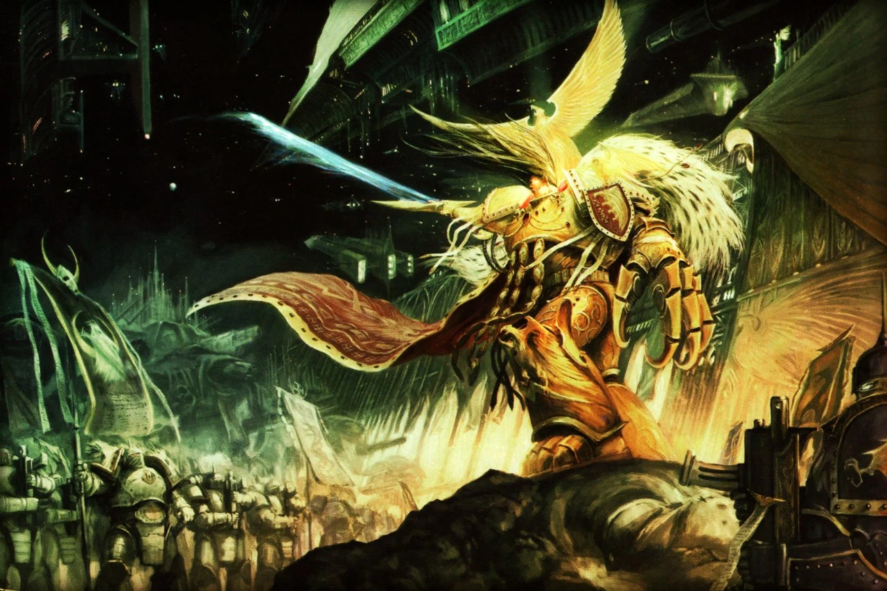
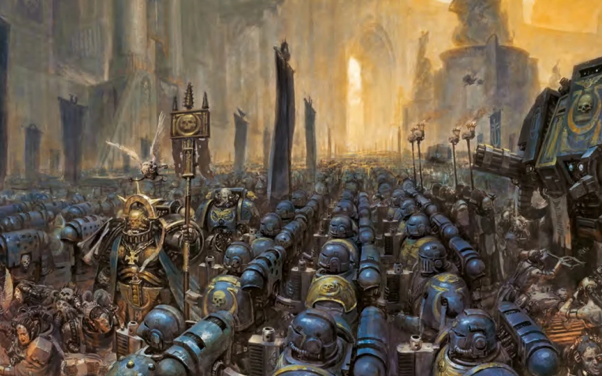
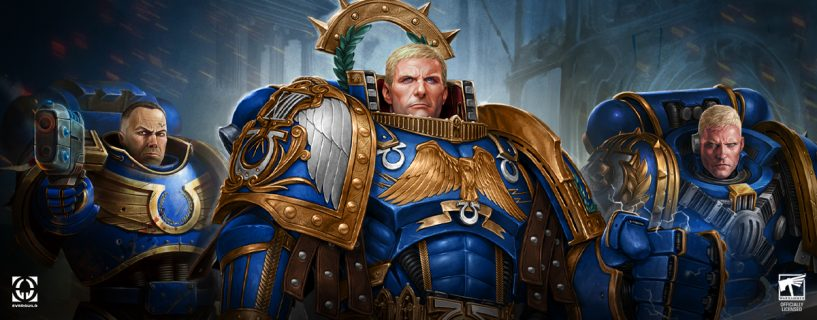

Ultramarines Lore and History
Journey through the rich history of the Ultramarines, from their inception on Macragge to their heroic battles in the current age of the Imperium.
The Great Crusade
The Great Crusade was the Emperor’s campaign to reunite the scattered human colonies across the galaxy and establish the Imperium of Man. It was during this era that Roboute Guilliman was discovered on Macragge and given command of the Ultramarines Legion. Under Guilliman’s leadership, the XIII Legion became renowned for its discipline, organizational skill, and ability to bring order to conquered worlds.
Standard Loadouts and Equipment
- Mark II “Crusade” Power Armor with limited Mark III upgrades for breacher squads.
- Legion Bolt Rifles, Volkite weaponry, and Tactical Support Squads.
- Early Contemptor Dreadnoughts with heavy Volkite weaponry.
- Heavy use of Land Raiders, Spartans, and Stormbirds for planetary assaults.
- Tactics emphasized large-scale planetary compliance and rapid orbital deployment.
Common Enemies of the Era
- Orks – Savage xenos warlords and Waaaghs threatening frontier systems.
- Eldar – Frequent skirmishes with Craftworld raiders defending ancient webway routes.
- Hrud – Encounters with these time-phased, entropy-wielding xenos caused significant losses.
- Human Separatist Kingdoms – Rogue human empires resisting Imperial Compliance.
Founding of the Ultramarines
The Ultramarines were officially designated the XIII Legion and reorganized under Guilliman’s command after his rediscovery. Guilliman’s administrative genius turned Ultramar into a shining beacon of Imperial order, and the Legion became the Emperor’s most trusted agents for stabilizing new conquests.
Standard Loadouts and Equipment
- Mark III “Iron” Power Armor for breaching operations.
- Legion-pattern Bolters, Power Swords, and Volkite Chargers.
- Contemptor and Deredeo Dreadnoughts for heavy fire support.
- Spartan Assault Tanks for elite deployments.
- Focus on combined arms tactics and planetary governance post-conquest.
Common Enemies of the Era
- Orks – Continued suppression of major Waaaghs in the Eastern Fringe.
- Laer – A vile xenos species eradicated in purges led by the XIII Legion.
- Inter-Legion Rivalries – Minor clashes with fellow Legions over compliance protocols.
The Horus Heresy
The Word Bearers’ betrayal during the Battle of Calth plunged Ultramar into the flames of war. The Ultramarines fought valiantly to repel Chaos incursions and rebuild their devastated realm, defending the Imperium’s Eastern territories from annihilation.
Standard Loadouts and Equipment
- Mark IV Maximus armor as standard issue, with Cataphractii Terminator squads for elite roles.
- Plasma weaponry and Volkite Calivers as preferred armaments for anti-armor warfare.
- Leviathan Dreadnoughts for siege-breaking operations.
- Sicaran Battle Tanks deployed for fast attack operations.
- Tactics emphasized guerrilla warfare and defensive campaigns against traitor forces.
Common Enemies of the Era
- Word Bearers – Primary traitor legion responsible for Ultramar’s devastation.
- Chaos Daemons – Manifested in the Ruinstorm, requiring psychic countermeasures.
- Alpha Legion – Conducted covert sabotage missions against Ultramarines forces.
Codex Astartes and the Second Founding
Following the defeat of Horus, Guilliman penned the Codex Astartes to prevent future heresies. The Ultramarines were divided into smaller Chapters, each modeled on their tactics and discipline, with the Ultramarines remaining the spiritual heart of this new structure.
Standard Loadouts and Equipment
- Mark VI Corvus-pattern armor and widespread adoption of Mark VII Aquila armor.
- Introduction of Storm Bolters and Cyclone Missile Launchers for Terminator squads.
- Thunderhawk Gunships and Predator Destructors for air and armor support.
- Sternguard Veterans utilizing specialized ammunition for precision strikes.
- Focus on rapid strike forces and codified tactics.
Common Enemies of the Era
- Orks – Endless Waaagh! incursions across Imperial space.
- Eldar Corsairs – Ambushes along key trade routes.
- Drukhari Raiders – Striking at the Ultramarines’ supply lines.
The Current Era
In the aftermath of the Cicatrix Maledictum, Guilliman returned to lead the Indomitus Crusade, reforging the Imperium in the face of Chaos, xenos, and rebellion. The Ultramarines now deploy alongside Primaris reinforcements, safeguarding humanity in its darkest hour.
Standard Loadouts and Equipment
- Primaris Power Armor (Mark X Phobos and Gravis variants).
- Hellblasters, Aggressors, and Inceptors leading the charge.
- Redemptor Dreadnoughts and Repulsor Executioners fielded for devastating firepower.
- Gladiator-class tanks and Invictor Warsuits for flexible battlefield dominance.
- Tactics focus on combined arms, adaptability, and strategic reinforcement of Imperial sectors.
Common Enemies of the Era
- Chaos Space Marines – Black Legion and Death Guard incursions.
- Tyranids – Hive Fleet Kraken threatening Ultramar’s worlds.
- Necrons – Awakening Tomb Worlds in Ultramarine-controlled sectors.